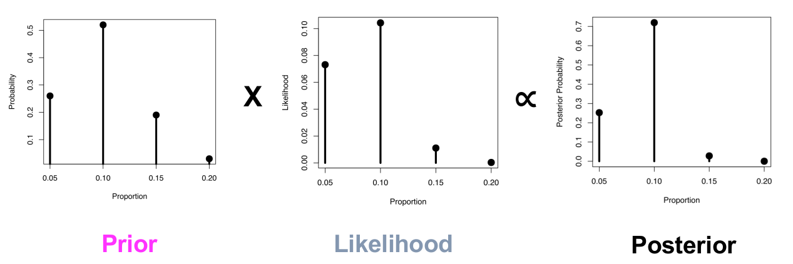

Bayes rule & distributions; Inference with grid approximation
R
Bayes
Published
February 8, 2023
Introduction
In the first post in this series I introduced some basic probability rules and used them to derive Bayes rule.
\[
P(B|A) = \frac{P(A|B)P(B)}{P(A)}
\]
Bayes rule allows us to ‘invert’ conditional probabilities & this is surprisingly useful!
In the first post I used Bayes rule to calculate the probability of a being on a particular degree programme given you earned a first class mark and also the probability of actually having a disease after testing positive for the disease. These examples both used single probability values but Bayes rule really shines when we apply it to entire probability distributions. This can be harder to wrap your head around. In this post we’ll use a technique called grid approximation to illustrate how all the moving parts fit together. We’ll see how Bayes rule allows us to use an entire probability distribution to test multiple hypotheses together.
What is a probability distribution?
A probability distribution is the mapping of disjoint outcomes in an event space to the probability of those outcomes.
There are three rules for constructing probability distributions:
The outcomes listed must be disjoint i.e. they cannot occur at the same time
Each probability must be between 0 and 1
The total probability in the event space and therefore in the distribution must sum up to 1
Over the years statisticians have developed many idealised probability distributions for different kinds of outcome space. These distributions have specific mathematical formulae. They are idealised in that they describe the probability of outcomes well enough to be useful but they are not exact models of the real world. The well known Normal distribution is an example.
If probability distributions are unfamiliar to you and you want more detail then Chapter 2 of the OpenIntro Statistics is a good place to start.
Why would we want to use a Bayesian approach for inference?
A key difference between the Bayesian and NHST/frequentist approaches to inference centers on the philosophical stance around probability. For frequentists ‘probability’ of an outcome is defined as the number of times that outcome is seen in a long run of ‘experiments’. The Bayesian stance views probability as something more subjective; we define probability in terms of our expectation based on experience & knowledge about the world; probability can be interpreted as the ‘plausibility’ of an outcome.
One of the key differences this makes to inference (which is just educated guessing) is that Bayesians can easily incorporate prior knowledge. Incorporating prior knowledge should be part of principled scientific inference; we should build on what went before. However incorporating prior knowledge is hard for frequentists. For Bayesians the probability of one off events like life on Mars is easy; we just assign this some prior probability then collect data and ‘do’ Bayes! For frequentists the probability of life on Mars is difficult to define. What does it mean to have a frequentist infinity of Mars (what would the plural be? Marses? Marsii? 😕) to examine for the presence of life?
The dominant statistical paradigm in use is frequentist null hypothesis significance testing (NHST). For analysis of scientific studies in e.g. the biomedical field where I mostly work, this system relies on an assumption of a long run of study repeats (the frequentist part). But study repeats are rarely done and when they are the results are usually disappointing for statistical and other reasons (Amaral and Neves (2021), Errington et al. (2021), OPEN SCIENCE COLLABORATION (2015)). NHST only examines the probability of the data you have (or more extreme data) under a null hypothesis. The frequentist procedures use a p-value to inform on this null hypothesis. Notably the p-value is a conditional probability; it is the probability of the data you have or data more extremegiven the null hypothesis is true. In maths:
\[
p\mbox{-}value = P(data|H_0)
\]
If we assume the null hypothesis is true then a low p-value counts as ‘some evidence’ against the null… but how much evidence? The p-value tells us the probability of data not the probability of the null hypothesis; in fact we assume the null is true so the probability of the null (or ‘chance alone’ irrespective of the p-value) is 100% under this assumption!
This probability - \(P(data|H_0)\) - is not usually the probability we want. We usually want the ‘inverse conditional’:
\[
P(H_0|data)
\]
That is, the probability of the null hypothesis given the data. NHST does not give us this.
There are no shortage of other criticisms of the NHST system. For example NHST tells you nothing about any alternative hypotheses. We’ll see below onw way a Bayesian approach can deal with this.
Finally NHST (as usually used) is a combination of the Fisherian approach (significance testing) and the Neyman-Pearson (hypothesis testing) approaches to inference. These systems are not compatible and whilst each of these alone is coherent the hybrid that is NHST is not coherent.
Confusion surrounding the reporting and interpretation of results of classical statistical tests is widespread among applied researchers, most of whom erroneously [my emphasis] believe that such tests are prescribed by a single coherent theory of statistical inference… In particular, there is a widespread failure to appreciate the incompatibility [my emphasis] of Fisher’s evidential p-value with the Type I error rate, \(\alpha\), of Neyman-Pearson statistical orthodoxy.
All that is not to say frequentist statistics is not useful - it’s just sensible to know what you’re getting for your money.
Bayes rule is a straightforward combination of basic probability rules and as such inference based on Bayes rule is the result of a coherent system. If you want to read more about the incoherence in NHST then two accessible accounts are given by Cohen (1994) & Hubbard and Bayarri (2003).
Anyway philosophical rant aside let’s look at how Bayes rule can help us.
Bayes rule for hypotheses
We can re-state Bayes rule in terms of data and models - models are just ‘events’ in some probability space.
We have some model under consideration (e.g. a ‘null’ hypothesis) and we can define the prior probability of that model. This is the \(P(Model)\) part. Conceptually this is the plausibility of the model expressed as a probability before we see any data.
We combine the prior with the likelihood - \(P(Data|Model)\) - of the \(Data\) under each possible parameter in the the \(Model\). The product in the numerator is then normalized to a probability by taking the probability of the \(Data\) over all possible model parameters in the prior. This sum of products - \(P(Data)\) - is often called the evidence. The calculation on the right hand side then gives us the probability of our \(Model\) given the \(Data\) - \(P(Model|Data)\) - the posterior.
Estimating a proportion
All of the above is pretty abstract and will be easier with an example. Suppose I believe that 10% of students in the previous post are capable of scoring 70% or more in an exam (in the UK system this is a first class mark). My belief in 10% is not absolute though… I might consider 5%, 10%, 15% & 20% to be plausible. A Bayesian approach allows me to examine each of these hypotheses (\(models\)) given some \(data\).
Before we go down the Bayesian route though let’s take a look at the usual frequentist NHST approach to this question. If you want to follow along the data for this analysis are here.
NHST approach to estimating a proportion
The marks for 2015 show that 8 out of 104 students got a mark of 70% or more, a proportion of 7.7%. How can I compare this data to my belief that 10% of students are capable of a mark of 70% or more?
The outcome here is binary i.e. each student can score 70% or more (a ‘success’) or less than 70% (a ‘failure’; no judgement - ‘success’& ‘failure’ are just conventional labels for binary outcomes). We have some number of trials (each student represents a trial) and some number of successes. In a situation like this we can use the binomial distribution to calculate a p-value from the data we have. In R the binom.test() function does the heavy lifting. We enter the number of ‘successes’ (8), the total number of trials (104) and the probability of success under the null hypothesis. Since I believe 10% of students are capable of a first class mark the probability of success under the null hypothesis here is 0.1.
# binom.test(successes, total trials, prob success)binom.test(8, 104, 0.1)
Exact binomial test
data: 8 and 104
number of successes = 8, number of trials = 104, p-value = 0.5154
alternative hypothesis: true probability of success is not equal to 0.1
95 percent confidence interval:
0.03379462 0.14595163
sample estimates:
probability of success
0.07692308
The interpretation here is that if the true probability of success is 10% then the probability of 8 succsses out of 104 trials (7.7%) or a more extreme proportion is about 51% (the p-value). Conventionally we would fail to reject the null (note this is not the same as accept the null) at conventional 5% significance. I might tentatively conclude that the data somewhat support my guess that 10% of students are capable of a first class mark.
This tells me something about an assumed proportion of 10% but what if I want to test other possible proportions like 5%, 15% or 20%? I could do more binomial tests but then I run into multiple comparison problems (Tukey 1991) because I want to control the type 1 error rate at 5%. Note also I have no power calculation here so I can’t actually set a number of observations to control the type 1 error rate. So what does my p-value mean in a strict NHST sense? Note that post-hoc power is not (ever) the right thing to do e.g. (Hoenig and Heisey 2001), (Gelman 2019).
Bayesian inference with grid approximation
Let’s move on to a Bayesian analysis. I’ll use a simple grid with values representing each of four plausible proportions (5%, 10%, 15% & 20%) and use Bayes rule to update my belief in each proposed proportion in light of the data I have. In order to use Bayes rule I first have to set some prior belief over each of the proposed proportions. I can create probabilities for each proportion by first weighting each proportion arbitrarily for plausibility.
# set 'plausibility' on proportions of 5, 10, 15 & 20%props <-seq(0.05, 0.2, 0.05) # my proportions; start, stop, stepwgts <-c(4, 8, 3, 0.5) # arbitrary plausibility weight for each proportion; most on 0.1cbind(props, wgts)
Now I can divide each individual weight through by the total weight thus scaling the weights to lie in the interval [0,1] and also making sure they sum to 1. In effect I have created a probability distribution.
priors <-round(wgts/sum(wgts),2) # convert weights to probabilitiescbind(props, wgts, priors)
The priors column in the above represents the plausibility of each proportion. Note that most of my prior probability is on 10%. I don’t place much probability on 20%; first class marks should be hard to get otherwise they’re rather meaningless!
The Wisdom of Buddy Pine
These discrete probabilities make a probability distribution.
As before the marks for 2015 show that 8 out of 104 students achieved a mark of 70% or more, a proportion of 7.7%. How should this information change my belief about each of the proportions defined above?
Here \(\theta\) (the Greek letter theta) is my proportion (5%, 10%, 15% & 20%) and \(D\) is my data (0.077). Bayes rule gives me a route to get from the probability of some data given a parameter - \(P(D | \theta)\) - to the probability of the parameter given some data - \(P(\theta | D)\).
I will set up 4 hypotheses:
\(H_1: \theta = 0.05\). My prior probability = 0.26
\(H_2: \theta = 0.10\). My prior probability = 0.52
\(H_3: \theta = 0.15\). My prior probability = 0.19
\(H_3: \theta = 0.20\). My prior probability = 0.03
To get the posterior probability for each of these I need to calculate \(P(D|\theta)\) - the likelihood - for each hypothesis i.e. I need to calculate the likelihood of seeing 8/104 people get a mark of 70% or more given each plausible proportion - 5%, 10%, 15% or 20%.
The binomial distribution allows me to calculate these likelihoods. The binomial distribution gives me the probability of getting \(s\) successes in \(n\) trials given some probability, \(p\) of success.
The formula for the binomial probability distribution is:
# calc posteriorspost <- bayes_tab$like_x_prior/denom |>round(4)# add posterior probs to the tablebayes_tab$post <-round(post, 4)knitr::kable(bayes_tab, caption ="Table 3. Priors, likelihoods, their product and posterior probabilities for different proportions.")
Table 3. Priors, likelihoods, their product and posterior probabilities for different proportions.
theta
prior
likelihood
like_x_prior
post
0.05
0.26
0.0731
0.0190
0.2533
0.10
0.52
0.1043
0.0542
0.7227
0.15
0.19
0.0111
0.0021
0.0280
0.20
0.03
0.0003
0.0000
0.0000
We can plot the posterior.
# plot the posteriorsplot(bayes_tab$theta, bayes_tab$post, type='h', xlab='Proportion', ylab='Posterior Probability', main ='Posterior distribution', lwd=4)points(bayes_tab$theta, bayes_tab$post, pch=16, cex=2)
The posterior distribution
The probability of 10% of students achieving 70% or more on the module has gone from 52% before seeing data to 72% after seeing the data for 2015 (8 out of 104 students). So that’s good - these results strengthen my belief that 10% of students will get 70% or more.
Note that unlike the NHST approach I was able to examine 4 hypotheses at the same time. The Bayesian approach gives me a richer inferential view of the results of my study. Whilst the data supports my belief in 10% I wouldn’t be surprised to see a proportion of only 5% (25% probability according to this analysis) but I’d be more surprised to see 15% (2.8% probability according to this analysis). This is a more considered conclusion compared to the usual dichotomous (and wrong) decision taken based on a non-significant p-value of ‘no effect’.

Relationship between prior, likelihood and posterior in a Bayesian analysis.
The figure above shows how the posterior distribution is constructed in a Bayesian analysis. The posterior is the prior weighted by the likelihood (the \(\propto\) symbol means “proportional to” - here it just means we’re ignoring the denominator). The grid approach is useful for seeing how all the moving parts come together but it does not allow us to examine all possible proportions or continuous distributions. In the next post we’ll look at how we can use conjugate priors to address these problems.
Summary
In this post we moved from Bayes rule to introducing Bayesian inference. We used a grid approximation approach to examine how the data supported several hypotheses at once. This allowed us to see how the moving parts of a basic Bayesian analysis come together. As we move on to examine more complex scenarios keep in mind that all that’s happening under the hood is what was done here.
Errington, Timothy M, Alexandria Denis, Nicole Perfito, Elizabeth Iorns, and Brian A Nosek. 2021. “Challenges for Assessing Replicability in Preclinical Cancer Biology.” Edited by Peter Rodgers and Eduardo Franco. eLife 10 (December): e67995. https://doi.org/10.7554/eLife.67995.
Hubbard, Raymond, and M. J Bayarri. 2003. “Confusion Over Measures of Evidence (p’s) Versus Errors (\(\alpha\)’s) in Classical Statistical Testing.”The American Statistician 57 (3): 171–78. https://doi.org/10.1198/0003130031856.
OPEN SCIENCE COLLABORATION. 2015. “Estimating the Reproducibility of Psychological Science.”Science 349 (6251): aac4716. https://doi.org/10.1126/science.aac4716.
Tukey, John W. 1991. “The Philosophy of Multiple Comparisons.”Statistical Science 6 (1): 100–116.